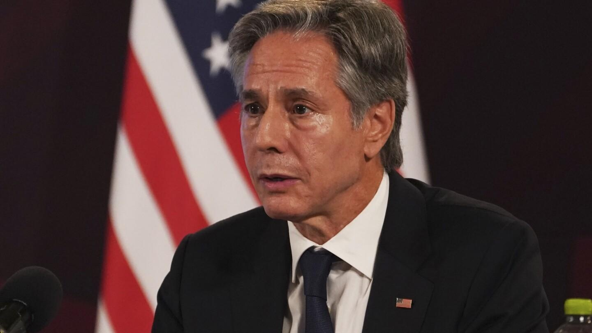

Blinken calls deposed Niger leader ahead of expected US declaration that his overthrow was a coupBlinken calls deposed Niger leader ahead of expected US declaration that his overthrow was a coup Blinken calls deposed Niger leader ahead of expected US declaration that his overthrow was a coup WASHINGTON (AP) — Secretary of State Antony Blinken called Niger’s deposed President Mohamed Bazoum ahead of an expected decision by the Biden administration to formally declare that his overthrow was a coup d’etat. The State Department said Blinken called Bazoum on Monday to stress that a restoration of a freely elected government remains the best way for Niger to not only succeed for its people but also to remain a key partner of the U.S. and others in countering extremism. In the call, Blinken “reiterated that a democratically elected, civilian-led government presents the best opportunity to ensure that Niger remains a strong partner in security and development in the region,” the State Department said in a brief statement. “The United States calls for the immediate release of all those unjustly detained following the military takeover,” the department said. Blinken’s call came as the Democratic administration is preparing to make a formal determination that July’s military takeover in the central African nation meets the legal standard for a coup, according to officials familiar with the matter. That determination could come as early as Tuesday, the officials said. The officials spoke on the condition of anonymity because an announcement had not yet been made. Under U.S. law, a formal determination of a coup — the unconstitutional overthrow of a democratically elected government — typically results in a suspension of all non-humanitarian assistance, particularly military aid and cooperation, to the country concerned. Some U.S. aid to Niger has been suspended since Bazoum’s ouster, but it was unclear if the determination would halt American military activity in the country. The Biden administration had been delaying a coup decision because Niger plays a critical role in U.S. counterterrorism activity in Africa’s Sahel region. Niger has been hosting some 1,100 American troops in regional outposts for wide-ranging patrols by armed drones and other counterterrorism operations against Islamic extremist movements. The officials could not say if the expected coup determination would result in the withdrawal of any U.S. personnel from Niger. The officials said the Pentagon had resisted such a move and hinted that the administration may have found a legal rationale to continue counterterrorism cooperation with the military junta. Pentagon officials have been reviewing options for the U.S. troop presence in Niger. Defense and military leaders are reluctant to abandon Agadez, one of Niger’s biggest cities, which is deemed a critical base for counterterrorism missions and oversight. Niger has battled a jihadi insurgency linked to al-Qaida and the Islamic State group for years. And the junta’s capacity to improve Niger’s security has increasingly been questioned recently as attacks have increased since mutinous soldiers toppled the government. Niger was seen as one of the last democratic countries in the Sahel that Western nations could partner with to beat back the jihadi insurgency in the vast expanse below the Sahara Desert. The U.S., France and other European countries had poured hundreds of millions of dollars into shoring up the Nigerien military. But late last month, French President Emmanuel Macron agreed to withdraw France’s ambassador and troops from Niger after demands from the junta and amid widespread anti-French sentiment in the former colony. ___ Associated Press writer Lolita C. Baldor contributed to this report. |
 |